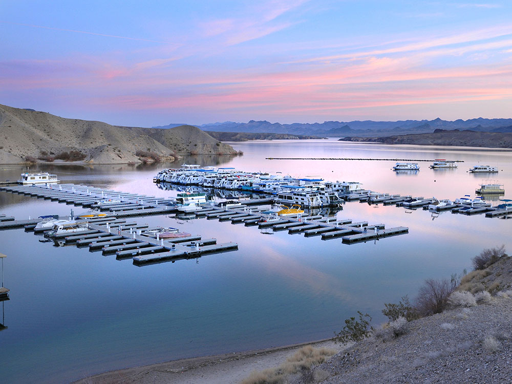
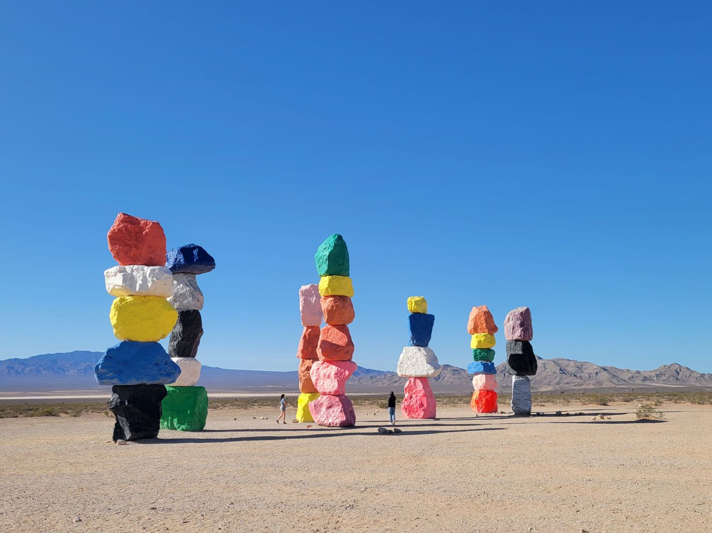

Nevada Travel Guide
Experience Las Vegas' dazzling lights and casinos, then explore Nevada's stark desert beauty, the Sierra Nevada, and Lake Tahoe's clear waters.
Nevada Map
Places to See in Nevada

Bellagio Hotel and Casino
Carol M. Highsmith, Public domain, via Wikimedia Commons; Image Size Adjusted
Las Vegas
Internationally renowned major resort city, known primarily for its gambling, shopping, fine dining, entertainment, and nightlife

Derrellwilliams, CC BY-SA 4.0, via Wikimedia Commons

Great Basin National Park
Named for the dry and mountainous region and notable for its groves of ancient bristlecone pines, the Lehman Caves, as well as Wheeler Peak Glacier
Hoover Dam
Concrete arch-gravity dam on the border between Nevada and Arizona, constructed between 1931 and 1936 during the Great Depression

Murray Foubister, CC BY-SA 2.0, via Wikimedia Commons; Image Size Adjusted
.jpg){kind=link}
Lake Mead National Recreation Area
Follows the Colorado River corridor including all of Lake Mead as well as the smaller Lake Mohave

Seven Magic Mountains
Photo by
Elizabeth Villalta on Unsplash; Image Size Adjusted
Seven Magic Mountains
Photo by
Elizabeth Villalta on Unsplash; Image Size Adjusted
Cities
Overview
Nevada, the "Silver State," is the seventh-largest state in the nation and one of the most visited, drawing travelers with an unusual mix of neon-lit resorts and wide-open desert. Most visitors arrive for Las Vegas, where world-class casinos, residencies, restaurants, nightlife, and conventions turn a patch of the Mojave Desert into one of the world's great entertainment capitals. The state is also known for liberal gaming, marriage, and entertainment laws that have shaped its identity since the early twentieth century.
Beyond the casinos, Nevada rewards those who look further. Travelers come for the red sandstone of Valley of Fire State Park and Red Rock Canyon, the engineering marvel of Hoover Dam, the boating and beaches of Lake Mead, the alpine blue water of Lake Tahoe, the ancient bristlecone pines of Great Basin National Park, and the Old West mining towns, ghost towns, and dark night skies of the state's vast interior.
Geography
Nevada lies almost entirely within the Basin and Range Province, where dozens of north-south mountain ranges rise above flat desert valleys. Many valleys sit above 3,000 feet (910 m), and some in central Nevada are above 6,000 feet (1,800 m), while several ranges, including the Spring Mountains, the Ruby Mountains, and the Snake Range, top 11,000 feet and shelter forests high above the desert floor, creating "sky islands" for rare plants and animals. Boundary Peak is the state's highest point at 13,147 feet (4,007 m). Much of the state lies within the Great Basin, where rivers never reach the sea; the southern third lies in the hot Mojave Desert, and the western edge touches the Sierra Nevada. About 86% of the state's land is managed by the federal government, which keeps enormous areas open to public exploration.
History
Native peoples, including the Southern Paiute, Western Shoshone, Northern Paiute, and Washoe, lived in the region for thousands of years before Spanish explorers and fur trappers crossed it, and the name Nevada means "snowy" in Spanish. The Mormon Station trading post near Genoa, founded in 1851, was among the first permanent settlements. The discovery of the Comstock Lode near Virginia City in 1859 set off a silver rush that brought fortune seekers from around the world, and Nevada became the 36th state on October 31, 1864, during the Civil War. When mining faded, the state turned to ranching, railroads, and new industries: gambling was legalized in 1931, the same year construction began on Hoover Dam, and the postwar boom turned Las Vegas into a resort capital. Mining remains important, and Nevada is among the world's leading gold producers.
Las Vegas
Roughly three-quarters of Nevadans live in Clark County, home to Las Vegas. The famed Las Vegas Strip is lined with themed megaresorts such as Bellagio and Caesars Palace, while Downtown Las Vegas offers the vintage lights of Fremont Street and the Neon Museum. Visitors also find headline concerts and shows, fine dining, shopping, and attractions such as AREA15, and the city is a convenient base for day trips to Hoover Dam, Red Rock Canyon, Valley of Fire, and Mount Charleston.
Carson City and Reno
In western Nevada, Carson City, the state capital, preserves the history of the Comstock era with the Nevada State Capitol, the Nevada State Museum in the former U.S. Mint, the Governor's Mansion, and the walking Kit Carson Trail. About 30 miles north, Reno, the "Biggest Little City in the World," combines casinos with a revitalized riverfront on the Truckee River, the Nevada Museum of Art, the National Automobile Museum, and events such as the Great Reno Balloon Race and Hot August Nights. Both cities sit close to the Sierra Nevada and the Nevada shore of Lake Tahoe, making them gateways for skiing, hiking, and water sports.
Beyond the Big Three: Cities and Recreation
Outside the three main hubs, Nevada's smaller towns each have a distinct character. Laughlin is a riverfront casino resort on the Colorado River; Boulder City, the town built for Hoover Dam workers, is a quiet gateway to Lake Mead; Virginia City keeps its wooden boardwalks and saloons from the silver boom; and Elko, Winnemucca, and Ely anchor the ranching and mining country of the north and east. Recreation ranges from boating and fishing at Lake Mead and Lake Mohave, to skiing and hiking in the Mount Charleston area, to off-roading at Sand Mountain, hot springs soaking, rockhounding, and stargazing. Adventurous travelers also follow the Extraterrestrial Highway and visit Area 51 themed sites in the remote southeast.
U.S. Route 50: The Loneliest Road in America
Crossing the center of the state, U.S. Route 50 earned the nickname the "Loneliest Road in America" after a 1986 Life magazine article, and the label has become a marketing badge of honor. The roughly 400-mile route follows part of the old Pony Express and Lincoln Highway trails through long, empty basins and mountain passes, linking small towns such as Austin, Eureka, and Ely, with stops including Fallon, Fort Churchill, Hickison Petroglyphs, and the Nevada Northern Railway Museum. It ends near Great Basin National Park, so travelers should carry water, fuel up in the larger towns, and expect long gaps between services.
National Protected Areas
Nevada's national protected areas highlight its remarkable variety. Great Basin National Park protects Wheeler Peak, ancient bristlecone pines, and Lehman Caves. Lake Mead National Recreation Area, created around the reservoir behind Hoover Dam, is a major boating destination, and the Spring Mountains National Recreation Area offers cool mountain escapes near Las Vegas. Red Rock Canyon National Conservation Area features a scenic loop and climbing, and the Black Rock Desert-High Rock Canyon Emigrant Trails National Conservation Area preserves historic pioneer routes and the playa that hosts Burning Man. National monuments include Gold Butte, with petroglyphs and red rock, Basin and Range, a remote landscape of valleys and ancient rock art, and Tule Springs Fossil Beds, which holds Ice Age fossils. The state also contains part of Death Valley National Park along its southwestern border, plus several national wildlife refuges and national historic trails.
State Parks and Historic Sites
Nevada's state parks are some of its best-loved destinations. Valley of Fire State Park, the state's oldest and largest, is known for fiery sandstone formations and petroglyphs, and Cathedral Gorge State Park has dramatic clay spires and slot-like canyons. Lake Tahoe Nevada State Park, including Sand Harbor, offers some of the clearest water and finest beaches in the West. Historic sites include Ward Charcoal Ovens, Fort Churchill, Mormon Station, and Berlin-Ichthyosaur State Park, which pairs a preserved mining ghost town with the fossils of giant marine reptiles. The Comstock-era Virginia City National Historic Landmark District completes the picture of Nevada's frontier past.
Seasons and When to Visit
Nevada can be visited year-round, but the best season depends on where you are going. Spring (March to May) and fall (September to November) bring mild weather for hiking Red Rock, Valley of Fire, and Lake Mead, and fall brings golden aspens and events such as the Great Reno Balloon Race and Burning Man. Summer is extremely hot in the south, with Las Vegas often above 100°F, so it is the time for pools, Lake Mead water sports, and cooler escapes at Mount Charleston, Lake Tahoe, and Great Basin National Park, where hiking and camping peak. Winter is the best time for southern desert hiking and for skiing and snowboarding in the Lake Tahoe and Reno area and on Mount Charleston, though high-country roads can close and temperatures in the north drop well below freezing. Las Vegas is busiest during major conventions, holidays, and big sporting events, so book early.
This article uses material from the Wikipedia article "Nevada", as well as "Mount Charleston", and "Mount Charleston, Nevada", which are released under the Creative Commons Attribution-Share-Alike License 3.0. Additional information was drawn from the National Park Service, the Nevada Division of State Parks, the Bureau of Land Management, and Travel Nevada.